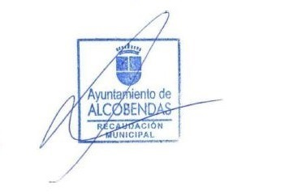

JUSTIFICANTE DE PAGO DE IBI
, con NIF/CIF , titular del inmueble sito en , con referencia catastral , está acogido a la modalidad de domiciliación APLAZA6; por lo que tiene concedido un fraccionamiento de pago del recibo del Impuesto sobre Bienes Inmuebles correspondiente al presente ejercicio en 6 meses, que se inicia en mayo y finaliza en octubre, y ello en virtud de lo dispuesto en el artículo 62 de la Ordenanza General de Gestión, Recaudación e Inspección de los Ingresos Propios de Derecho Público.
Sin que, a fecha de hoy, conste devolución alguna de los plazos que se han girado en pago de la deuda tributaria.
Lo que se hace constar a los efectos oportunos.
JUSTIFICANTE DE PAGO DE IVTM
, con NIF/CIF , titular del vehículo modelo , con matrícula , está acogido a la modalidad de domiciliación APLAZA6; por lo que tiene concedido un fraccionamiento de pago del recibo del Impuesto de Vehículos de Tracción Mecánica correspondiente al presente ejercicio en 6 meses, que se inicia en mayo y finaliza en octubre, y ello en virtud de lo dispuesto en el artículo 62 de la Ordenanza General de Gestión, Recaudación e Inspección de los Ingresos Propios de Derecho Público.
Sin que, a fecha de hoy, conste devolución alguna de los plazos que se han girado en pago de la deuda tributaria.
Lo que se hace constar a los efectos oportunos.
INFORME NEGATIVO DE DEUDA
Isidro Valenzuela Villarrubia, Tesorero del Ayuntamiento de Alcobendas, hago constar:
Que según los antecedentes contables obrantes en la aplicación de ingresos de esta Recaudación Municipal, , con NIF/CIF , está al corriente en el pago de las liquidaciones/recibos emitidos a su nombre en concepto de impuestos, tasas o precios públicos municipales, gestionados por esta unidad recaudatoria.
La presente certificación no se hace extensiva a liquidaciones que se encuentren en periodo voluntario de pago ni a otras obligaciones exigibles pendientes de liquidar, por lo que no producirá los efectos de exención de responsabilidades a los que se refiere el articulo 175.2 de la Ley General Tributaria, para los supuestos de sucesión en la responsabilidad de pago de las deudas tributarias por adquisición de explotaciones o actividades económicas y herencia.
MANDAMIENTO DE CANCELACION DE PRECINTO DE VEHICULOS
A la Jefatura Provincial de Tráfico de Madrid.
Expediente: Deudor: DNI/CIF: Isidro Valenzuela Villarrubia, Tesorero del Ayuntamiento de Alcobendas, hago constar:
Que con fecha de hoy he dictado la siguiente resolución en el expediente que en ella misma se expresa:
DILIGENCIA.- En el expediente administrativo de apremio seguido en esta Recaudación Municipal a nombre de , que dio lugar a la Diligencia de embargo de vehículos de fecha , se ha procedido a satisfacer el importe perseguido por lo que, de conformidad con lo establecido en el artículo 172.4 de la Ley 58/2003, General Tributaria, PROCEDO A ALZAR EL EMBARGO Y PRECINTO de los referidos bienes, que responden al siguiente detalle:
Matrícula: Marca: Modelo: Tipo de vehículo: Notifíquese al deudor así como al Registro de Bienes Muebles, Sección de Automóviles y otros Vehículos de Motor para la cancelación del embargo y, en su caso, a la Policía Local que corresponda para levantamiento del precinto y salida del vehículo antes detallado, todo ello en cumplimiento de lo dispuesto en los artículos 169.5 de la Ley 58/2003, General Tributaria, y 76.4 del Reglamento General de Recaudación (R.D. 939/2OOS, de 29 de julio)."
En Alcobendas a .
